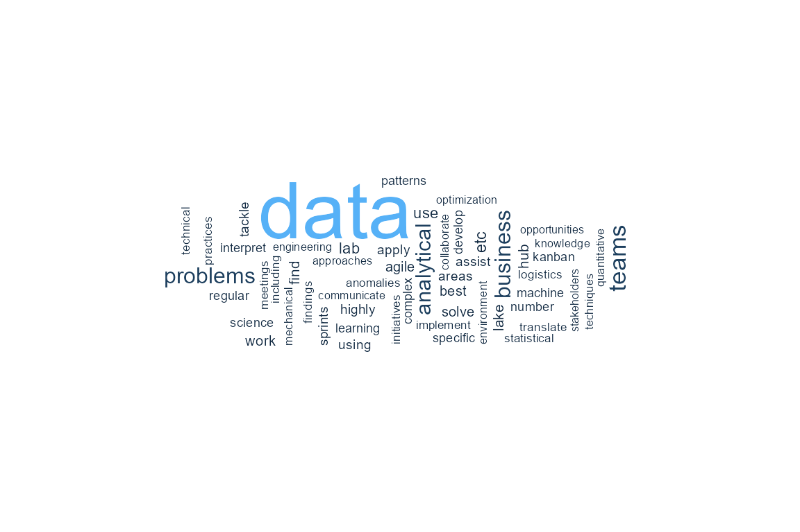
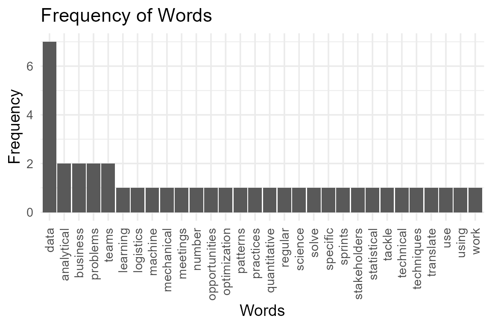
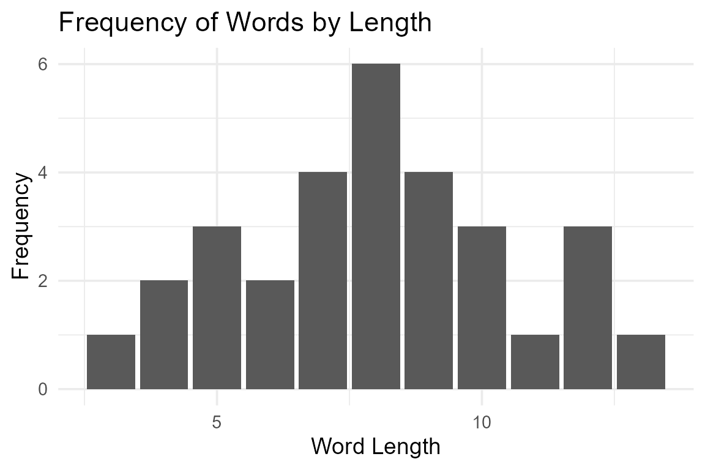

coRPysprofiling.RmdThe coRPysprofiling package can help you do some preliminary EDA and EDV on text data. As well as comparing corpora to determine similarity.
library(coRPysprofiling)Lets start with some input text. We are going to look at a data science job description to begin with.
data_science_job <- "Apply statistical and machine learning knowledge to specific business problems and data. Develop initiatives to assist Engineering, Logistics, and Mechanical teams in a number of highly technical areas. Use data science techniques to find data patterns, anomalies, and optimization opportunities. Interpret, translate, and communicate analytical findings to business stakeholders. Tackle and solve complex analytical problems using quantitative approaches. Collaborate to implement data best practices through the Data Lab, Data Hub, and Data Lake teams. Work in an agile environment including regular meetings, sprints, Kanban, etc."corpus_analysis
We can use the corpus_analysis function to calculate some high level statistics on this text. This will return a data frame (or tibble) with the total number of words, total number of tokens, number of unique tokens, average token length, the number of sentences and the average number of tokens in all sentences.
corpus_analysis(data_science_job)
#> value
#> word_total 85.0
#> token_total 66.0
#> token_unique 56.0
#> token_avg_len 7.3
#> sent_count 7.0
#> sens_avg_token 9.4corpus_viz
We can also the corpus_viz function to generate three visualization of this corpus. To access the individual visualizations, index the visualization object by plot name.
visuals <- corpus_viz(data_science_job)
visuals["word cloud"]
#> $`word cloud`
visuals["word freq bar chart"]
#> $`word freq bar chart`
visuals["word length bar chart"]
#> $`word length bar chart`
corpora_compare
Now lets use the corpora_compare function to determine the similarity of two corpora, using the default metric cosine_similarity. We will load another data science job description.
data_science_job2 <- [1071 chars quoted with '"']
corpora_compare(data_science_job, data_science_job2)
#> Downloaded model found. Loading downloaded model...
#> [1] 0.1568981The closer the value is to zero, the more similar the corpora are. Sometimes you can send up with a very small numbers instead of exactly 0, this is due to rounding. Lets check the score for two identical corpora.
corpora_compare(data_science_job, data_science_job)
#> Downloaded model found. Loading downloaded model...
#> [1] 0We can chose to use the euclidean metric to calculate the similarity. Like the cosine_similarity metric values closer to zero are more similar and identical corpora should return a score of zero.
corpora_compare(data_science_job, data_science_job2, metric="euclidean")
#> Downloaded model found. Loading downloaded model...
#> [1] 12.5259
corpora_compare(data_science_job, data_science_job, metric="euclidean")
#> Downloaded model found. Loading downloaded model...
#> [1] 0corpora_best_match
We can use the corpora_best_match function to rank corpora against a reference document by similarity. Lets expand our example to include some more job descriptions, the combine those into a list.
accounting_job <- "Prepare balance sheets, profit and loss statements and other financial reports. Responsibilities also include analyzing trends, costs, revenues, financial commitments and obligations incurred to predict future revenues and expenses. Reports organization's finances to management and offers suggestions about resource utilization, tax strategies and assumptions underlying budget forecasts.May require a bachelor's degree in area of specialty and 2-4 years of experience in the field or in a related area. Familiar with standard concepts, practices and procedures within a particular field. Rely on experience and judgment to plan and accomplish goals. Perform a variety of tasks. Work under general supervision. A certain degree of creativity and latitude is required. Typically reports to a supervisor or manager."
admin_job <- "Administrative assistant duties and responsibilities include providing administrative support to ensure efficient operation of the office. Supports managers and employees through a variety of tasks related to organization and communication. Responsible for confidential and time sensitive material. Familiar with a variety of the field's concepts, practices and procedures. Ability to effectively communicate via phone and email ensuring that all Administrative Assistant duties are completed accurately and delivered with high quality and in a timely manner. May direct and lead the work of others. Rely on experience and judgment to plan and accomplish goals and a wide degree of creativity and latitude is expected. Typically reports to a manager or head of a unit/department."
bank_job <- "Support Investment Advisors in providing superior customer service and be available to meet client requests. Ensure effective communication between all parties (clients, advisors, internal and external agents). The candidate needs to be able to identify all risks inherent to the Wealth Management sector's activities"
sales_job <- "Direct and oversee an organization's sales policies, objectives and initiatives. Set short- and long-term sales strategies and evaluate effectiveness of current sales programs. Recommend product or service enhancements to improve customer satisfaction and sales potential. Familiar with a variety of the field's concepts, practices and procedures. Rely on extensive experience and judgment to plan and accomplish goals. Lead and direct the work of others. A wide degree of creativity and latitude is expected. Typically reports to top management. The successful candidate will understand what motivates customers to buy and know how to tap into those needs and desires in an effective way."
job_list <- c(accounting_job, admin_job, bank_job, data_science_job,
data_science_job2, sales_job)We can compare this list against our reference document. Let’s use the program description from the UBC Masters of Data Science program.
mds <- "Are you a creative problem solver with a love for data? UBC’s Master of Data Science was designed for you. Developed to give students a fast track to a great career, the program is helping to meet a growing need by producing skilled professionals who can turn data into knowledge. Utilizing descriptive and prescriptive techniques, students extract and analyze data from both unstructured and structured forms, uncover insights, and learn to effectively communicate their results with stakeholders. Graduates are highly trained, qualified data scientists who can help businesses and organizations, across all domains, improve strategy, products, services, health, safety, and so much more by translating their findings into solutions that enable and inform action."
corpora_best_match(mds, job_list)
#> Downloaded model found. Loading downloaded model...
#> Downloaded model found. Loading downloaded model...
#> Downloaded model found. Loading downloaded model...
#> Downloaded model found. Loading downloaded model...
#> Downloaded model found. Loading downloaded model...
#> Downloaded model found. Loading downloaded model...
#> # A tibble: 6 x 2
#> corpora metric
#> <chr> <dbl>
#> 1 You have spent countless hours over the years solving hard problems in~ 0.0818
#> 2 Direct and oversee an organization's sales policies, objectives and in~ 0.0980
#> 3 Apply statistical and machine learning knowledge to specific business ~ 0.104
#> 4 Administrative assistant duties and responsibilities include providing~ 0.128
#> 5 Prepare balance sheets, profit and loss statements and other financial~ 0.170
#> 6 Support Investment Advisors in providing superior customer service and~ 0.174As expected the data science job descriptions are considered most similar to the UBC MDS program description.
We can also use the euclidean metric to calculate the similarity.
corpora_best_match(mds, job_list, metric = "euclidean")
#> Downloaded model found. Loading downloaded model...
#> Downloaded model found. Loading downloaded model...
#> Downloaded model found. Loading downloaded model...
#> Downloaded model found. Loading downloaded model...
#> Downloaded model found. Loading downloaded model...
#> Downloaded model found. Loading downloaded model...
#> # A tibble: 6 x 2
#> corpora metric
#> <chr> <dbl>
#> 1 You have spent countless hours over the years solving hard problems in~ 9.04
#> 2 Direct and oversee an organization's sales policies, objectives and in~ 9.90
#> 3 Apply statistical and machine learning knowledge to specific business ~ 10.2
#> 4 Administrative assistant duties and responsibilities include providing~ 11.3
#> 5 Prepare balance sheets, profit and loss statements and other financial~ 13.0
#> 6 Support Investment Advisors in providing superior customer service and~ 13.2